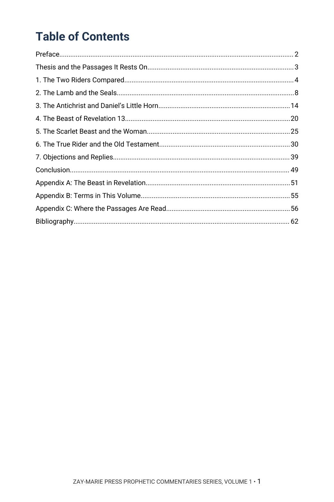
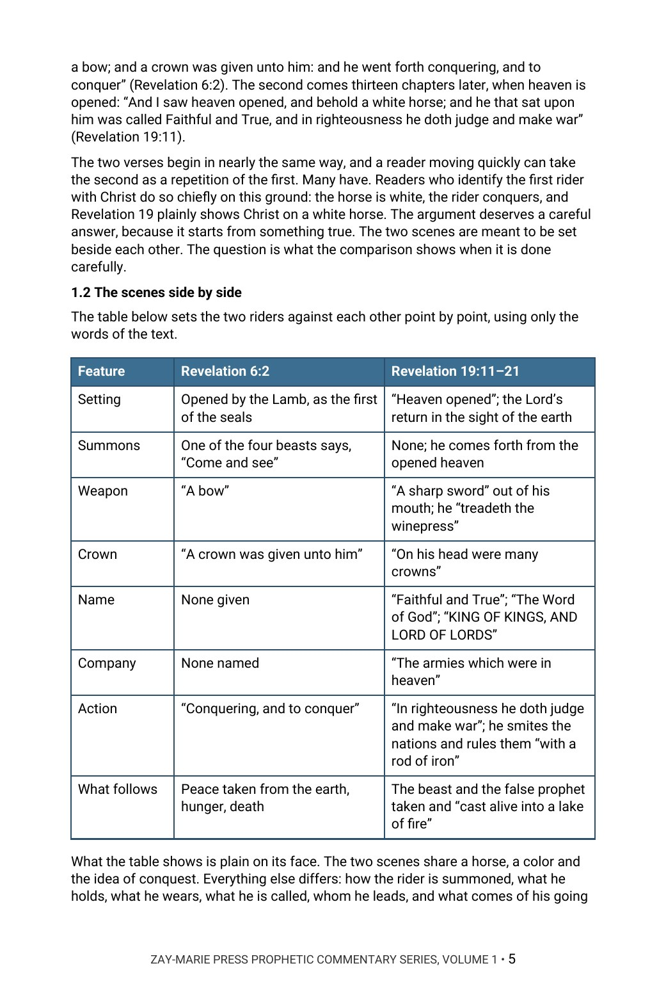

The Two Riders of Revelation
The Opening, the Consummation, and the Beast Between Them
Who rides the white horse when the Lamb opens the first seal, and who rides it when heaven is opened?
Revelation shows two riders on white horses, thirteen chapters apart. Many readers take the second as a repetition of the first. This commentary argues that they are not the same, and defends that position from the whole Bible.
It follows the first rider through the seals, Daniel’s little horn and the beasts of Revelation 13 and 17, answers the strongest objections in the objectors’ own words, and sets everything beside the rider of Revelation 19.
A Commentary That Argues a Position
This volume does not survey the views and leave the choice to the reader. It states what the author believes the passages teach, sets out the evidence from Genesis to Revelation, and quotes those who disagree, with their works and sources given, so that the objections are met where they are strongest.
It is a different kind of book from the Digital Studies. A Digital Study walks through a passage and reports what the text says. A Commentary Volume takes one theme, states a position and defends it. Readers of Study 74 (The Man of Sin) and Study 61 (Revelation 12) will find neighbouring ground here, argued rather than only reported. Scripture is quoted from the King James Version throughout.
Related Reading
Study 74 — The Man of Sin The passages on the man of sin, set out as written.
Study 61 — Revelation 12 The chapter that stands between the riders and the beast.
From the Opening of the Seals to the Return of the King
The Two Riders Compared
Set Revelation 6:2 beside Revelation 19:11–21 and see what they share and what they do not.
The Lamb and the Seals
Read the first seal in the order of the Lord’s own forecast on the Mount of Olives.
Daniel’s Little Horn
Trace the Antichrist through Daniel, 2 Thessalonians and the Gospels.
The Beast of Revelation 13
Compare the beast with Daniel’s little horn, his number, his wound and his image.
The Scarlet Beast and the Woman
Read Revelation 17 beside Daniel’s kingdoms, with the heads, the horns and the city.
Objections and Replies
Hear the other views in their own words and examine each against the text.
Read the Word in Its Context
Revelation 6:1–2
The Lamb opens the first seal and a rider goes forth.
Revelation 19:11–16
Heaven opened and the rider called Faithful and True.
Revelation 13:1–10
The beast from the sea, his wound, his authority and his war.
Revelation 17:3–14
The scarlet beast, the woman and the ten kings.
Daniel 7:7–8, 24–26
The fourth beast and the little horn among the ten.
Daniel 9:26–27
The prince that shall come and the covenant of the last week.
2 Thessalonians 2:3–12
The man of sin, his revealing and his end.
Matthew 24:4–5
The Lord’s first warning about the end: take heed that no man deceive you.
What This Book Sets Out to Do
This volume argues a doctrinal position and defends it from the whole canon.
It is not a neutral survey of how Revelation has been read, and it does not report each passage and leave the reader to decide.
Preview the Volume Before You Purchase
Click any page to enlarge it for reading.


Table of Contents
See the full order of the argument, from the Preface to the Bibliography.



The Two Riders Side by Side
See how the first chapter sets the two scenes against each other.
A Full Commentary on One Question
60-Page Digital PDF
Cover and a fully numbered interior.
Seven Argument Chapters
From the two riders compared to objections and replies.
Objections in Their Own Words
Writers who disagree, quoted with their works and sources.
Modern Scholarly Voices
Recent commentators quoted and answered where they differ.
KJV Tables
Passages set side by side for comparison.
Conclusion
The position restated in full, with a closing table.
Two Appendices
The beast in Revelation, the seals beside the Olivet discourse, and a list of terms.
Bibliography
Every source quoted, with where it can be checked.
The Two Riders of Revelation
60-page digital PDF · For personal use